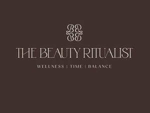

Trade Mark Journal No.2026/007 13 February 2026
UK00004299957 24 November 2025 (3,16,35,41,44)

- Class 3
- Beauty creams for body care; Beauty care cosmetics; Cosmetic preparations for skin care; Cosmetics; Beauty serums; Lotions for the skin; Beauty lotions; Creams for the skin; Body scrubs; Facial cleansers; Essential oils; Exfoliants; Exfoliating scrubs for the body; Exfoliating scrubs for the face; Nail care preparations; Beauty masks; Skincare preparations; Wax treatments for the hair.
- Class 16
- Printed training materials; Instruction manuals; Printed diagrams; Printed certificates; Handbooks; Printed packaging materials of paper; Printed informational flyers; Printed informational sheets; Printed leaflets; Printed questionnaires; Printed flyers; Booklets; Workbooks containing exercises; Instructional and teaching materials; Educational books; Teaching manuals; Journals; Printed promotional material; Printed booklets; Printed brochures; Printed books; Printed vouchers; Printed publications; Posters; Advertising posters; Brochures; Stationery; Pads [stationery].
- Class 35
- Online retail services relating to cosmetics; Marketing research in the fields of cosmetics, perfumery and beauty products; Online retail store services relating to cosmetic and beauty products; Commercial information and advice services for consumers in the field of beauty products; Product launch services; Brand evaluation services; Management of health care clinics for others; Personal management consultancy services; Business management and consultation services; Advertising, marketing and promotional services; Promotional marketing; Marketing, advertising and promotion services; Arranging and conducting of marketing events; Arranging and conducting of promotional events; Conducting of business research; Providing academic course administration services relating to online course registration; Providing academic course administration services relating to on-line course registration; Professional business consultancy.
- Class 41
- Training or education services in the field of life coaching; Educational services relating to beauty therapy; Training and education services; Educational seminars relating to beauty therapy; Health and wellness training; Education services relating to yoga; Arranging and conducting of seminars and workshops; Conducting workshops [training]; Conducting seminars; Arranging and conducting of workshops and seminars in self-awareness; Arranging and conducting of training workshops; Conducting courses, seminars and workshops; Providing online courses of instruction; Providing online training seminars; Providing online publications, not downloadable; Providing on-line publications; Providing information about online education; Yoga instruction; Pilates instruction; Exercise instruction; Training in yoga; Meditation training; Arranging of classes; Conducting workshops and seminars in personal awareness; Conducting workshops and seminars in self awareness; Education services relating to meditation; Personal coaching [training]; Coaching.
- Class 44
- Health spa services; Beauty therapy services; Beauty treatment services; Facial beauty treatment services; Beauty spa services; Beauty therapy treatments; Beauty salon services; Music therapy services; Beauty consultation services; Beauty consultancy services; Light therapy services; Pet beauty salon services; Advisory services relating to beauty treatment; Beauty information services; Beauty treatment services especially for eyelashes; Facial treatment services; Psychotherapy services; Consultation services relating to beauty care; Massage services; Spa services; Beauty counselling; Aromatherapy services; Consultancy services relating to beauty; Medical treatment services; Microdermabrasion services; Dermatology services; Hot stone massage therapy services; Medical services for treatment of the skin; Pregnancy massage services; Reflexology services; Chiropractic services; Advisory services relating to beauty; Pedicure services; Reiki services; Health care relating to relaxation therapy; Nail care services; Eyebrow tinting services; Cosmetic laser treatment for hair growth; Cosmetic laser treatment of unwanted hair; Eyebrow threading services; Eyelash perming services; Cosmetic laser treatment of skin; Eyelash tinting services; Eyebrow shaping services; Consulting services relating to health care; Reflexology; Massage; Laser hair removal services; Laser removal of tattoos; Body waxing services for hair removal in humans; Waxing services for the removal of hair from the human body; Personal hair removal services.
Stacey Jermy